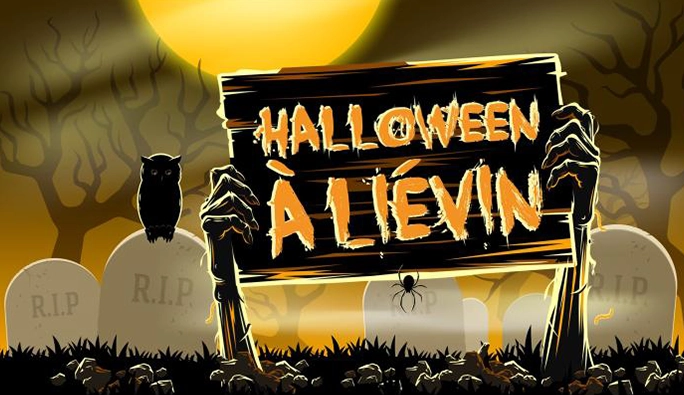

Pour sa deuxième édition, Halloween Run revient à Liévin le vendredi 28 octobre pour encore plus de frissons.
Victime de son succès l’année dernière, c’est sous une autre formule et agrémentée de nouvelles animations que la ville de Liévin vous propose de vivre une fête d’Halloween horriblement sympa...

C’est toujours au Parc de Rollencourt que l’esprit d’Halloween raisonnera à Liévin.
Plusieurs « zones de la peur » seront établies pour fluidifier l’accès et permettre à chacun de profiter des festivités. Pour les grands comme pour les petits, un village d’Halloween habillera le parking du chalet Brand.
Village fantômes, échassiers, cracheurs de feu, arbres lumineux… C’est dans cette ambiance que les visiteurs pourront se diriger vers deux parcours créés dans le sous-bois.
Pour permettre à chacun de vivre pleinement l’événement, la ville de Liévin met en place des inscriptions pour y accéder. Une fois inscrit, vous allez recevoir un email de confirmation avec votre numéro de réservation. Vous pouvez ensuite venir retirer vos bracelets au service des sports, 45 rue Edouard Vaillant du lundi au vendredi de 8h à 12h et de 13h30 à 18h